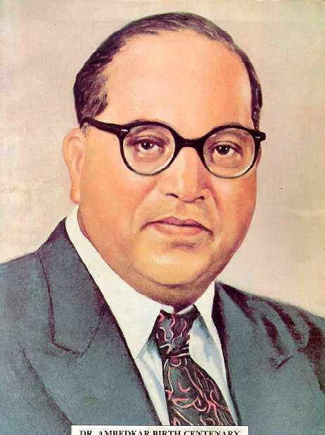

Dr. Bhimrao Ramji Ambedkar (1891–1956) was an Indian jurist, economist, social reformer, and political leader.He played a key role in drafting the Constitution of India and worked tirelessly for social justice, equality, and the rights of marginalized communities. His contributions to education, law, and social reform continue to inspire millions of people around the world
